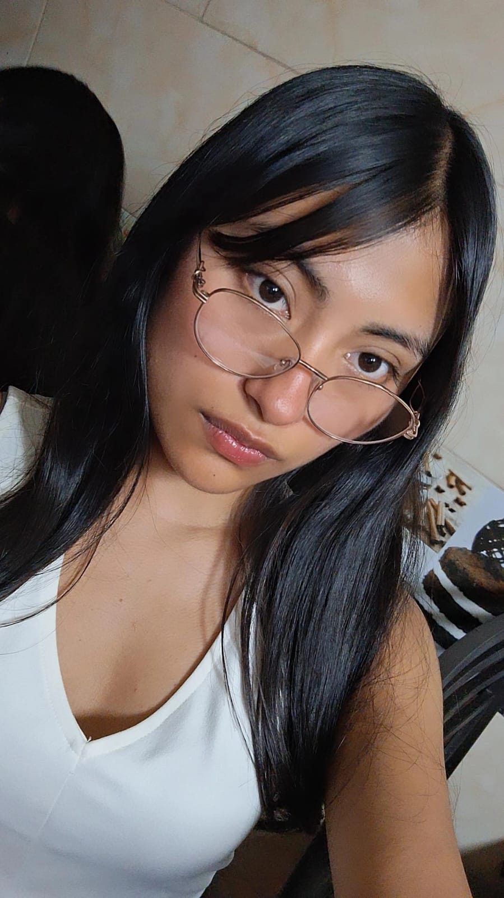
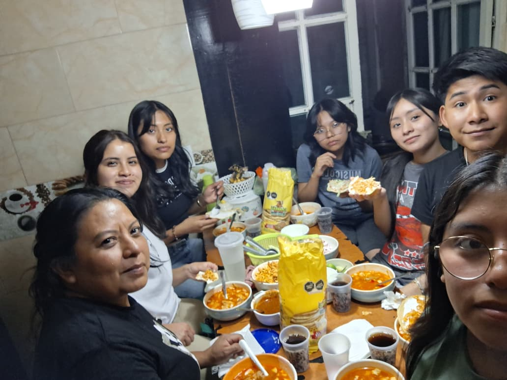
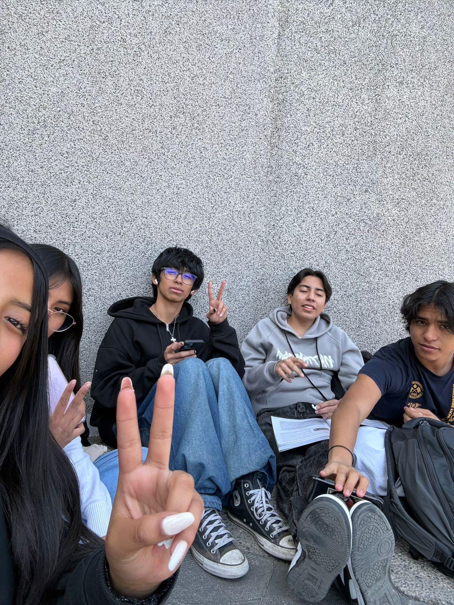

|
¿Quién soy? Soy Evelyn. Me considero una persona creativa, a la que le gustan los detalles bonitos (sobre todo cuando soy para personas a las que aprecio mucho) y siempre trato de dar lo mejor de mí.  |
|
Mi Familia y Amigos Para mi, ambos son mi lugar seguro. Me encanta coleccionar momentos con mi familia y divertirme con mis amigos. Son quienes me animan cuando siento que las cosas no pueden ser peor o cuando solo se ponen más dificiles.   |
|
Mis virtudes: Soy muy leal, siempre busco sacarle una sonrisa a las personas aunque ni yo me sienta bien y soy dedicada con las cosas que me interesan. Mis defectos: A veces me exijo demasiado, puedo llegar a sentirme frustrada facilmente y a veces suelo ser un poco pesimista. |
|
Mis Metas a Futuro Mi principal aspiración es terminar mi carrera, seguir descubriendo qué es lo que más me apasiona y llegar a ser una profesionista exitosa que pueda viajar mucho. |